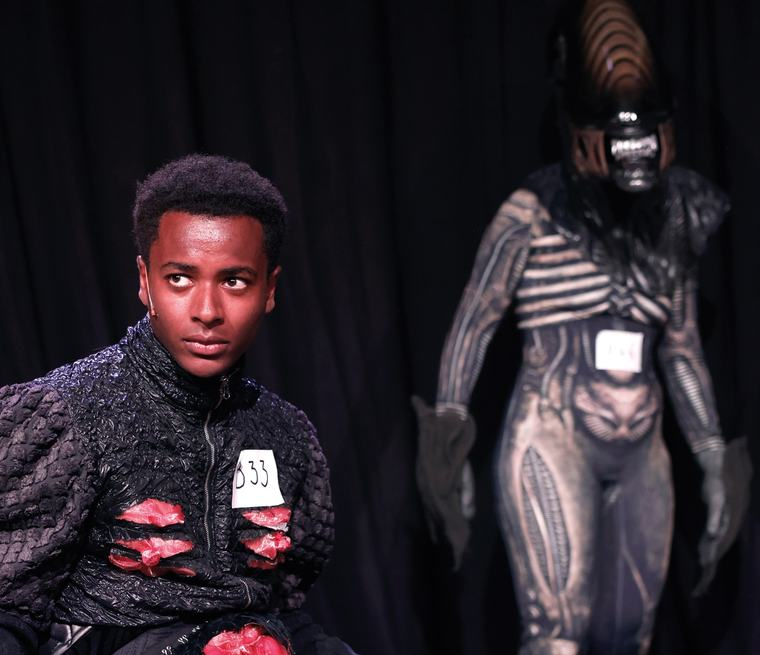
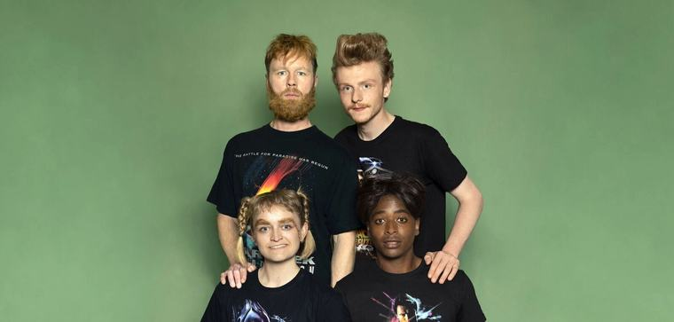

Revenge of the Extras

Een sci-fi satire over wie nooit bovenaan de callsheet staat. Op de set van een sciencefictionfilm eisen twee foeterende figuranten het hoofdpodium op, niet om moreel eerherstel te krijgen, maar om meegezogen te worden in een absurd spektakel waar zelfs de revolutie een performance is geworden. Met flitsende laserstralen en druipend alienbloed.
De Short Summer Show van Het Zuidelijk Toneel, gespeeld op theaterfestival De Parade in Rotterdam, Den Haag, Amsterdam en Utrecht.
“Een vrolijke verpakking met hoge amusementswaarde.”
“Een echte Parade-voorstelling met actie, humor en visuele effecten.”
“Een dramaturgisch uitbundig, kort toneelstuk.”

Credits
- tekst & regie
- Koen van Seuren
- spel
- Emma Vermeulen, Noah de Nooij, Teun Donders
- muziek
- Ton van der Meer
- kostuums
- Ilse Vermeulen
- tekstadvies
- David Westera
- dramaturgisch advies
- Joachim Robbrecht
- productie
- Het Zuidelijk Toneel
Speellijst
- 20/06/2025 · première, De Parade Rotterdam
- zomer 2025 · De Parade Den Haag, Amsterdam, Utrecht


foto: Het Zuidelijk Toneel